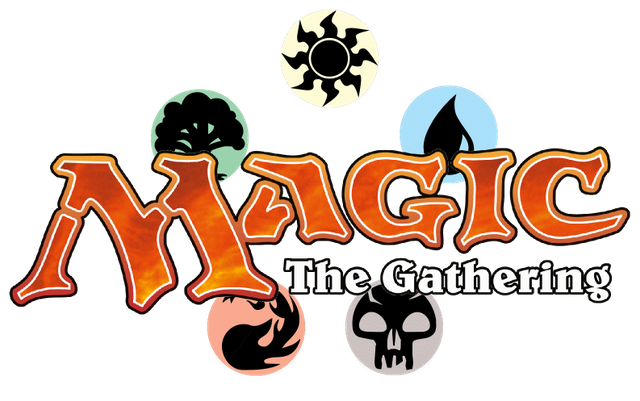
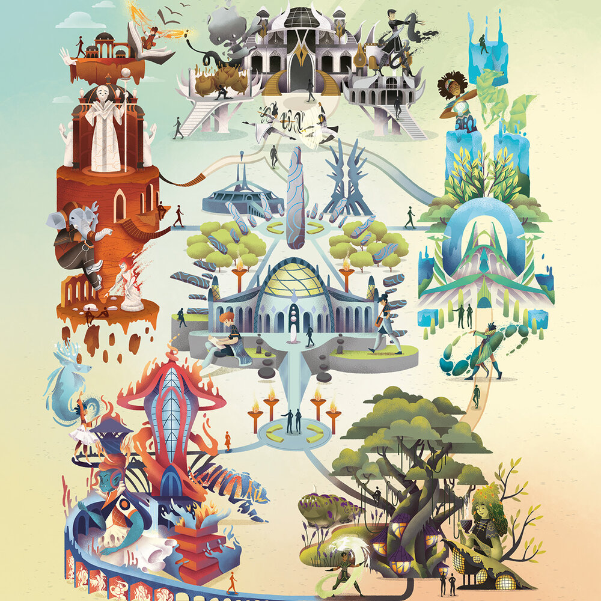

Em Strixhaven, campus do plano de Arcavios, os aprendizes são convidados a entrar para uma faculdade que permitirá que eles desenvolvam suas habilidades da melhor forma possível, alcançando todo seu potencial das mais diferentes formas. Cada faculdade é a combinação de duas cores diferentes de mana, criando resultados bem interessantes.
Sapioforte, também conhecida pelo nome Lorehold, é a faculdade da Arqueomancia. Nela estão os pesquisadores apaixonados por história e dedicados em aprender, mas que nem por isso deixam de lado as aventuras. Os alunos que escolhem a Sapioforte defendem que é preciso estudar com atenção os fatos do passado e sempre estão revisando os acontecimentos. O lema deles é: “Não deixem pedra sobre pedra”.
Prismari é a faculdade das Artes Elementais, com artistas que gostam de expressar seus sentimentos e ideias através de magia elemental, feitiços espetaculares e muita graça. Para os alunos da Prismari, o mundo é um palco e a arte é a melhor forma de expor sua existência. Conhecidos por sua criatividade e pela maneira que demonstram suas emoções, o lema dos alunos da Prismari é: “Expresse seu interior com os elementos!”
Quandrix estão aqueles que valorizam os números e a lógica acima de tudo. A faculdade da Numeromancia é o lar dos alunos engenhosos que gostam de explorar padrões e simetrias para controlar as forças da natureza. Capazes de um raciocínio rápido, eles são conhecidos por observarem a metafísica do universo. O lema dos Quandrix é “A matemática é uma mágica”.
Platinopena, também conhecida como Silverquill, é a faculdade da eloquência e daqueles que utilizam magia através das suas palavras. Dotados de uma incrível capacidade de falar bem em público e de encantar os outros com seus discursos, os alunos da Platinopena são excelentes com suas poesias, mas também não dispensam os insultos arcanos. Altamente competitivos e sempre em busca da liderança, os estudantes dessa faculdade utilizam seu carisma e inteligência em busca de sucesso — independente se for no bem ou no mal. O lema deles é: “Estilo afiado. Sagacidade ainda mais.”
Por último, mas definitivamente não menos importante, temos Murchaflor, também conhecida como Whiterbloom. A faculdade da vida e da morte é um lugar cheio de estudantes góticos que utilizam da essência de todos os seres vivos para utilizar seus poderes. Preferindo estar no meio da natureza, os alunos da Murchaflor são conhecidos por colher ervas para suas poções e por montar em crocodilos zumbis (sim, isso mesmo que você leu). Fazendo piadas sombrias, passando um bom tempo no pântano e sempre prontos para explorar a natureza e seu potencial oculto, o lema de Murchaflor é: “Suje as mãos.”
